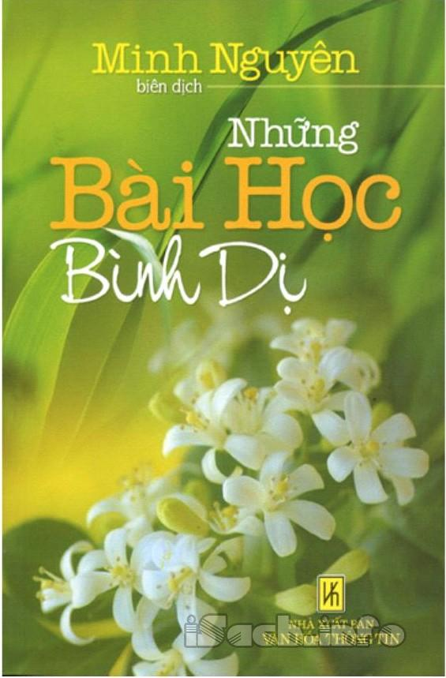

« Back
Những Bài Học Bình Dị
By Minh Nguyễn

Giới Thiệu.
Món Quà Của Con Gái.
Một Ly Sữa.
Sức Mạnh Vô Biên Của Tình Yêu.
Câu Chuyện Con Sao Biển.
Cậu Bé Khôn Ngoan.
Tờ Giấy Bạc.
Hải Đảo Của Tình Yêu.
Ứng Xử Với Nghịch Cảnh.
Có Phải Cái Bình Của Bạn Đã Đầy?.
Bông Hoa Thật.
Tên Trộm Thiêng Liêng.
Ảo Ảnh.
Cậu Bé Và Cây Táo.
Cái Thùng Nứt.
Người Đàn Ông Sinh Lên Thiên Đường.
Có Thể.
Hai Hạt Giống.
Cái Máy Xẻ Đá.
Chướng Ngại Vật Trên Đường Đi.
Đức Vua Và Những Bông Hoa.
Bức Tranh Yên Bình.
Hai Con Chó Sói.
Chú Kiến Ali.
Chai Rượu Mạnh.
Lợi Ích Của Sự Tử Tế.
Hãy Bằng Lòng Với Những Gì Bạn Có.
Mảnh Vườn Của Pete.
Tòa Lâu Đài Cát.
Gia Đình Nhà Gấu.
Thiên Nhiên Mầu Nhiệm.